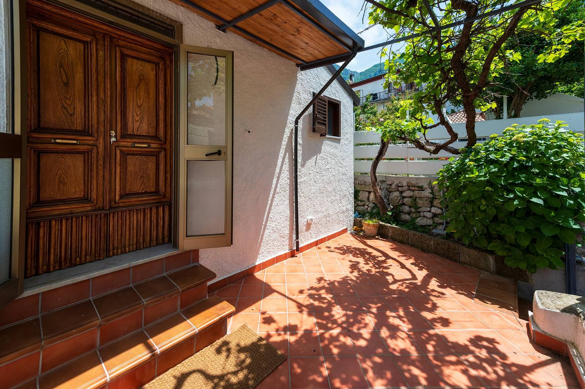
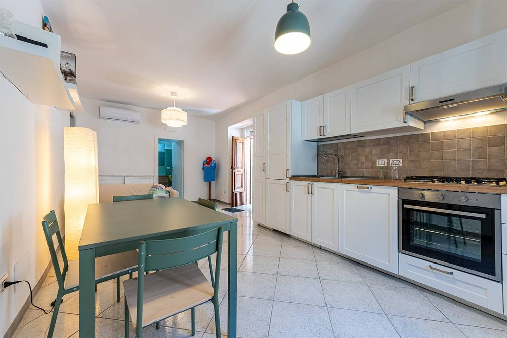

Zona giorno & cucina
Ampio soggiorno luminoso con angolo cottura, pensato per sentirsi come a casa.

Postiglione (SA) · Parco Nazionale del Cilento, Vallo di Diano e Alburni
Una casa vacanze indipendente tra i borghi di pietra e i monti Alburni, nel cuore del Cilento patrimonio UNESCO.
La casa
Il Minollo è una casa vacanze indipendente pensata per chi cerca tranquillità e autenticità: un'ampia e accogliente zona giorno con cucina, due camere da letto, un bagno e un piccolo terrazzino affacciato sul paesaggio di Postiglione.
Il punto di partenza ideale per esplorare i monti Alburni, il Vallo di Diano e i sentieri del Parco Nazionale del Cilento.

Gli spazi
Ampio soggiorno luminoso con angolo cottura, pensato per sentirsi come a casa.
Spazi curati e silenziosi per riposare dopo una giornata tra sentieri e borghi.
Un bagno completo e funzionale a disposizione degli ospiti.
Un piccolo spazio all'aperto dove godersi l'aria del Cilento in totale relax
Dove siamo
La casa si trova a Corso Vittorio Emanuele 49A, Postiglione, un piccolo borgo nel Parco Nazionale del Cilento, Vallo di Diano e Alburni, riconosciuto Riserva della Biosfera UNESCO. Da qui potete raggiungere facilmente i sentieri di montagna, le grotte degli Alburni e i borghi storici della zona.
Apri in Google Maps